第 21 章 ggplot2之主题设置
这一章我们一起学习ggplot2中的theme elements 语法，感谢Henry Wang提供了很好的思路。如果需要详细了解，可以参考Hadley Wickham最新版的《ggplot2: Elegant Graphics for Data Analysis》，最推荐的是ggplot2官方文档
theme(element_name = element_function())这里element_function()有四个
望文生义吧，内置元素函数有四个基础类型：
-
element_text(), 文本，一般用于控制标签和标题的字体风格 -
element_line(), 线条，一般用于控制线条或线段的颜色或线条类型 -
element_rect(), 矩形区域，一般用于控制背景矩形的颜色或者边界线条类型 -
element_blank(), 空白，就是不分配相应的绘图空间，即删去这个地方的绘图元素。
每个元素函数都有一系列控制外观的参数，下面我们通过具体的案例来一一介绍吧。
## ── Attaching core tidyverse packages ──────────────────────── tidyverse 2.0.0 ──
## ✔ dplyr 1.1.3 ✔ readr 2.1.4
## ✔ forcats 1.0.0 ✔ stringr 1.5.0
## ✔ ggplot2 3.4.3 ✔ tibble 3.2.1
## ✔ lubridate 1.9.2 ✔ tidyr 1.3.0
## ✔ purrr 1.0.2
## ── Conflicts ────────────────────────────────────────── tidyverse_conflicts() ──
## ✖ dplyr::filter() masks stats::filter()
## ✖ dplyr::lag() masks stats::lag()
## ℹ Use the conflicted package (<http://conflicted.r-lib.org/>) to force all conflicts to become errors还是用让人生厌的ggplot2::mpg数据包吧，具体介绍请见18 章。
glimpse(mpg)## Rows: 234
## Columns: 11
## $ manufacturer <chr> "audi", "audi", "audi", "audi", "audi", "audi", "audi", "…
## $ model <chr> "a4", "a4", "a4", "a4", "a4", "a4", "a4", "a4 quattro", "…
## $ displ <dbl> 1.8, 1.8, 2.0, 2.0, 2.8, 2.8, 3.1, 1.8, 1.8, 2.0, 2.0, 2.…
## $ year <int> 1999, 1999, 2008, 2008, 1999, 1999, 2008, 1999, 1999, 200…
## $ cyl <int> 4, 4, 4, 4, 6, 6, 6, 4, 4, 4, 4, 6, 6, 6, 6, 6, 6, 8, 8, …
## $ trans <chr> "auto(l5)", "manual(m5)", "manual(m6)", "auto(av)", "auto…
## $ drv <chr> "f", "f", "f", "f", "f", "f", "f", "4", "4", "4", "4", "4…
## $ cty <int> 18, 21, 20, 21, 16, 18, 18, 18, 16, 20, 19, 15, 17, 17, 1…
## $ hwy <int> 29, 29, 31, 30, 26, 26, 27, 26, 25, 28, 27, 25, 25, 25, 2…
## $ fl <chr> "p", "p", "p", "p", "p", "p", "p", "p", "p", "p", "p", "p…
## $ class <chr> "compact", "compact", "compact", "compact", "compact", "c…稍微做点数据整理
df <- mpg %>%
as_tibble() %>%
filter(class != "2seater", manufacturer %in% c("toyota", "volkswagen"))
df## # A tibble: 61 × 11
## manufacturer model displ year cyl trans drv cty hwy fl class
## <chr> <chr> <dbl> <int> <int> <chr> <chr> <int> <int> <chr> <chr>
## 1 toyota 4runner 4… 2.7 1999 4 manu… 4 15 20 r suv
## 2 toyota 4runner 4… 2.7 1999 4 auto… 4 16 20 r suv
## 3 toyota 4runner 4… 3.4 1999 6 auto… 4 15 19 r suv
## 4 toyota 4runner 4… 3.4 1999 6 manu… 4 15 17 r suv
## 5 toyota 4runner 4… 4 2008 6 auto… 4 16 20 r suv
## 6 toyota 4runner 4… 4.7 2008 8 auto… 4 14 17 r suv
## 7 toyota camry 2.2 1999 4 manu… f 21 29 r mids…
## 8 toyota camry 2.2 1999 4 auto… f 21 27 r mids…
## 9 toyota camry 2.4 2008 4 manu… f 21 31 r mids…
## 10 toyota camry 2.4 2008 4 auto… f 21 31 r mids…
## # ℹ 51 more rows我相信这种图你们已经会画了吧
df %>%
ggplot(aes(x = displ, y = hwy, color = factor(cyl))) +
geom_point() +
facet_grid(vars(manufacturer), vars(class)) +
ggtitle("This is my title") +
labs(x = "x_displ", y = "y_hwy")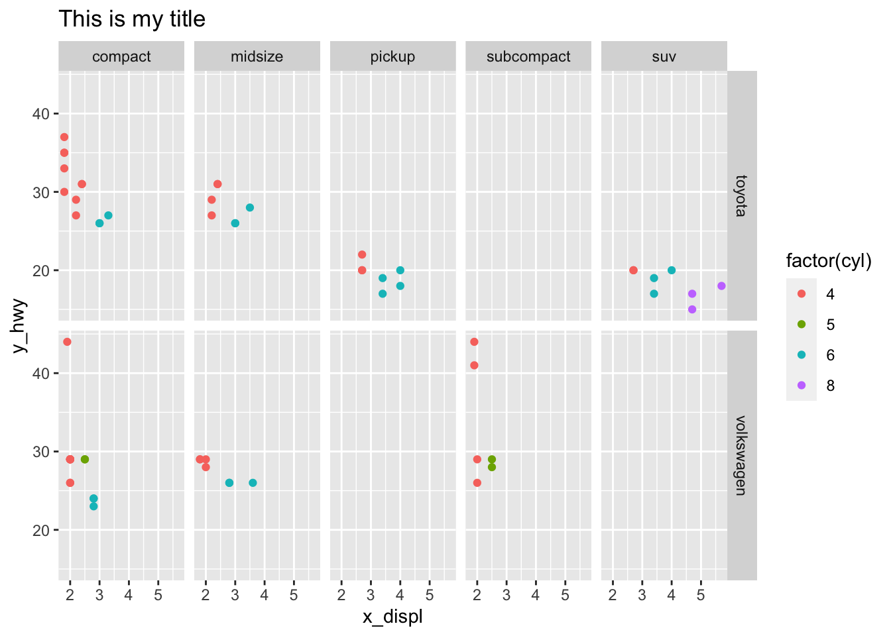
想让这张图，符合你的想法？如何控制呢？come on
21.1 图表整体元素
图表整体元素包括:
| 描述 | 主题元素 | 类型 |
|---|---|---|
| 整个图形背景 | plot.background | element_rect() |
| 图形标题 | plot.title | element_text() |
| 图形边距 | plot.margin | margin() |
df %>%
ggplot(aes(x = displ, y = hwy, color = factor(cyl))) +
geom_point() +
facet_grid(vars(manufacturer), vars(class)) +
ggtitle("This is my title") +
labs(x = "x_displ", y = "y_hwy") +
theme(
plot.background = element_rect(fill = "orange", color = "black", size = 10),
plot.title = element_text(hjust = 1, color = "red", face = "italic"),
plot.margin = margin(t = 20, r = 20, b = 20, l = 20, unit = "pt")
)## Warning: The `size` argument of `element_rect()` is deprecated as of ggplot2 3.4.0.
## ℹ Please use the `linewidth` argument instead.
## This warning is displayed once every 8 hours.
## Call `lifecycle::last_lifecycle_warnings()` to see where this warning was
## generated.
21.2 坐标轴元素
坐标轴元素包括:
| 描述 | 主题元素 | 类型 |
|---|---|---|
| 坐标轴刻度 | axis.ticks | element_line() |
| 坐标轴标题 | axis.title | element_text() |
| 坐标轴标签 | axis.text | element_text() |
| 直线和坐标轴 | axis.line | element_line() |
df %>%
ggplot(aes(x = displ, y = hwy, color = factor(cyl))) +
geom_point() +
facet_grid(vars(manufacturer), vars(class)) +
ggtitle("This is my title") +
labs(x = "x_displ", y = "y_hwy") +
theme(
axis.line = element_line(color = "orange", size = 2),
axis.title = element_text(color = "red", face = "italic"),
axis.ticks = element_line(color = "purple", size = 3),
axis.text = element_text(color = "blue"),
axis.text.x = element_text(angle = 45, hjust = 1)
)## Warning: The `size` argument of `element_line()` is deprecated as of ggplot2 3.4.0.
## ℹ Please use the `linewidth` argument instead.
## This warning is displayed once every 8 hours.
## Call `lifecycle::last_lifecycle_warnings()` to see where this warning was
## generated.
21.3 面板元素
面板元素包括:
| 描述 | 主题元素 | 类型 |
|---|---|---|
| 面板背景 | panel.background | element_rect() |
| 面板网格线 | panel.grid | element_line() |
| 面板边界 | panel.border | element_rect() |
df %>%
ggplot(aes(x = displ, y = hwy, color = factor(cyl))) +
geom_point() +
facet_grid(vars(manufacturer), vars(class)) +
ggtitle("This is my title") +
labs(x = "x_displ", y = "y_hwy") +
theme(
panel.background = element_rect(fill = "orange", color = "red"),
panel.grid = element_line(color = "grey80", size = 0.5)
)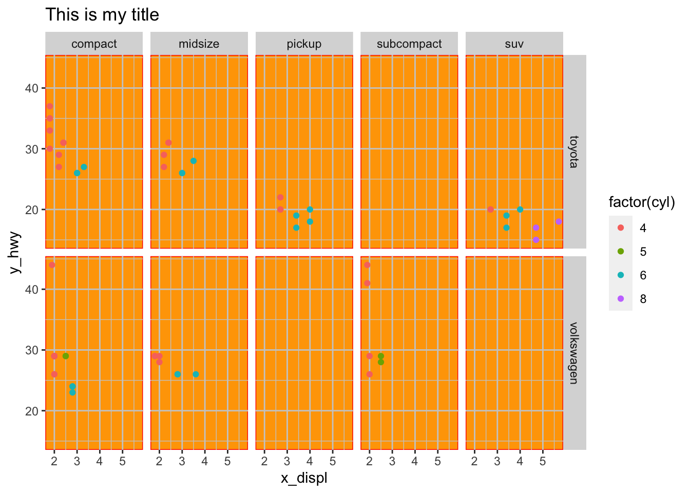
或者
df %>%
ggplot(aes(x = displ, y = hwy, color = factor(cyl))) +
geom_point() +
facet_grid(vars(manufacturer), vars(class)) +
ggtitle("This is my title") +
labs(x = "x_displ", y = "y_hwy") +
theme(
panel.background = element_rect(fill = "orange"),
panel.grid = element_line(color = "grey80", size = 0.5),
panel.border = element_rect(color = "red", fill = NA)
)
21.4 图例元素
图例元素包括:
| 描述 | 主题元素 | 类型 |
|---|---|---|
| 图例背景 | legend.background | element_rect() |
| 图例符号 | legend.key | element_rect() |
| 图例标签 | legend.text | element_text() |
| 图例标题 | legend.title | element_text() |
| 图例边距 | legend.margin | margin |
| 图例位置 | legend.postion | “top”, “bottom”, “left”, “right” |
df %>%
ggplot(aes(x = displ, y = hwy, color = factor(cyl))) +
geom_point() +
facet_grid(vars(manufacturer), vars(class)) +
ggtitle("This is my title") +
labs(x = "x_displ", y = "y_hwy") +
theme(
legend.background = element_rect(fill = "orange"),
legend.title = element_text(color = "blue", size = 10),
legend.key = element_rect(fill = "grey80"),
legend.text = element_text(color = "red"),
legend.margin = margin(t = 20, r = 20, b = 20, l = 20, unit = "pt"),
legend.position = "bottom"
)
21.5 分面元素
分面元素包括:
| 描述 | 主题元素 | 类型 |
|---|---|---|
| 分面标签背景 | strip.background | element_rect() |
| 条状文本 | strip.text | element_text() |
| 分面间隔 | panel.spacing | unit |
df %>%
ggplot(aes(x = displ, y = hwy, color = factor(cyl))) +
geom_point() +
facet_grid(vars(manufacturer), vars(class)) +
ggtitle("This is my title") +
labs(x = "x_displ", y = "y_hwy") +
theme(
strip.background = element_rect(fill = "orange"),
strip.text = element_text(color = "red"),
panel.spacing = unit(0.3, "inch")
# strip.switch.pad.grid =
)
21.6 案例
diamonds %>%
ggplot(aes(carat, price)) +
geom_hex() +
labs(title = "Diamond") +
theme(
axis.title.x = element_text(
size = 30,
color = "red",
face = "bold",
angle = 10
),
legend.title = element_text(
size = 25,
color = "#ff6361",
margin = margin(b = 5)
),
plot.title = element_text(
size = 35,
face = "bold",
color = "blue"
)
)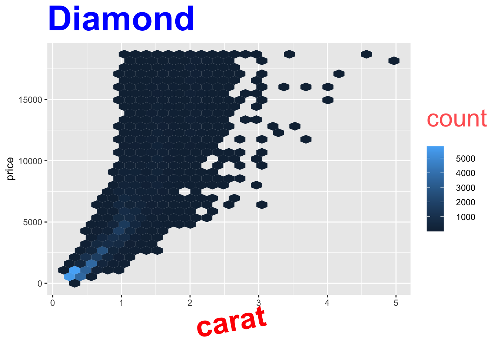
你肯定不会觉得这图好看。
library(palmerpenguins)
penguins %>%
ggplot(aes(bill_length_mm, bill_depth_mm)) +
geom_point() +
theme(
axis.line.y = element_line(
color = "black",
size = 1.2,
arrow = grid::arrow()
),
axis.line.x = element_line(
linetype = "dashed",
color = "brown",
size = 1.2
),
axis.ticks = element_line(color = "red", size = 1.1),
axis.ticks.length = unit(3, "mm"),
panel.grid.major = element_line(
color = "blue",
size = 1.2
),
panel.grid.minor = element_line(
color = "#58508d",
size = 1.2,
linetype = "dotted"
)
)## Warning: Removed 2 rows containing missing values (`geom_point()`).
penguins %>%
ggplot(aes(bill_length_mm, bill_depth_mm)) +
geom_point(aes(color = species)) +
theme(
legend.background = element_rect(
fill = "#fff6c2",
color = "black",
linetype = "dashed"
),
legend.key = element_rect(fill = "grey", color = "brown"),
panel.background = element_rect(
fill = "#005F59",
color = "red", size = 3
),
panel.border = element_rect(
color = "black",
fill = "transparent",
linetype = "dashed", size = 3
),
plot.background = element_rect(
fill = "#a1dce9",
color = "black",
size = 1.3
),
legend.position = "bottom"
)## Warning: Removed 2 rows containing missing values (`geom_point()`).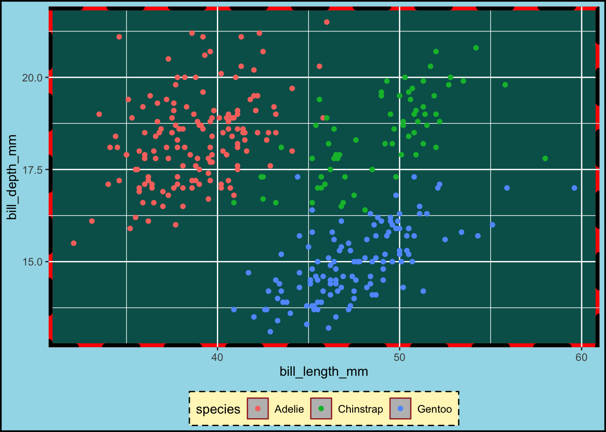

21.8 主题风格
当然可以使用自带的主题风格
thms <- list.files(path = "images/img", pattern = "built-in",full.names = T)
knitr::include_graphics(thms)


penguins %>%
ggplot(aes(x = bill_depth_mm, y = bill_length_mm)) +
geom_point() +
theme_minimal()## Warning: Removed 2 rows containing missing values (`geom_point()`).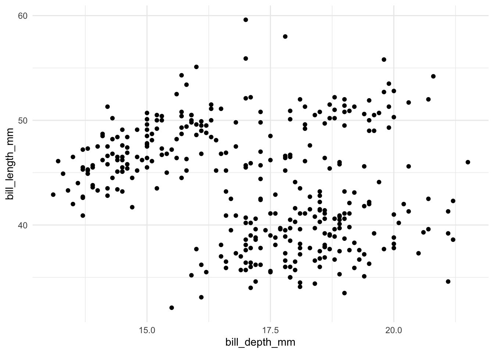
penguins %>%
ggplot(aes(x = bill_depth_mm, y = bill_length_mm)) +
geom_point() +
theme_bw() +
theme(text = element_text(family = "serif", size = 20),
panel.grid = element_blank()
)## Warning: Removed 2 rows containing missing values (`geom_point()`).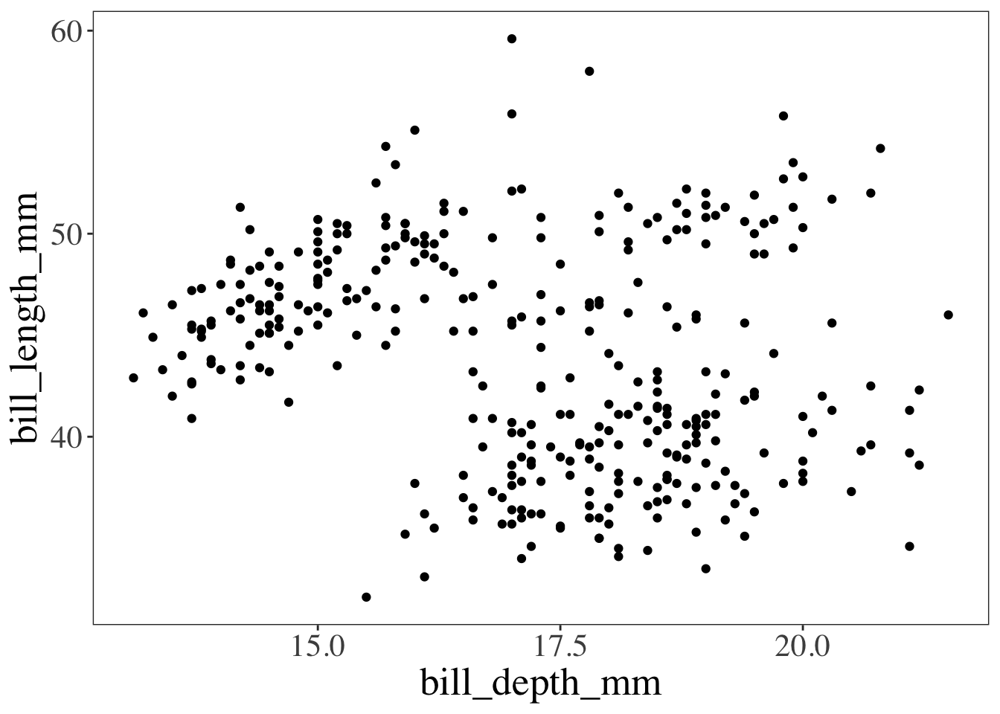
当然，ggthemes宏包也提供了很多优秀的主题风格
library(ggthemes)
penguins %>%
ggplot(aes(x = bill_depth_mm, y = bill_length_mm)) +
geom_point() +
ggthemes::theme_economist()## Warning: Removed 2 rows containing missing values (`geom_point()`).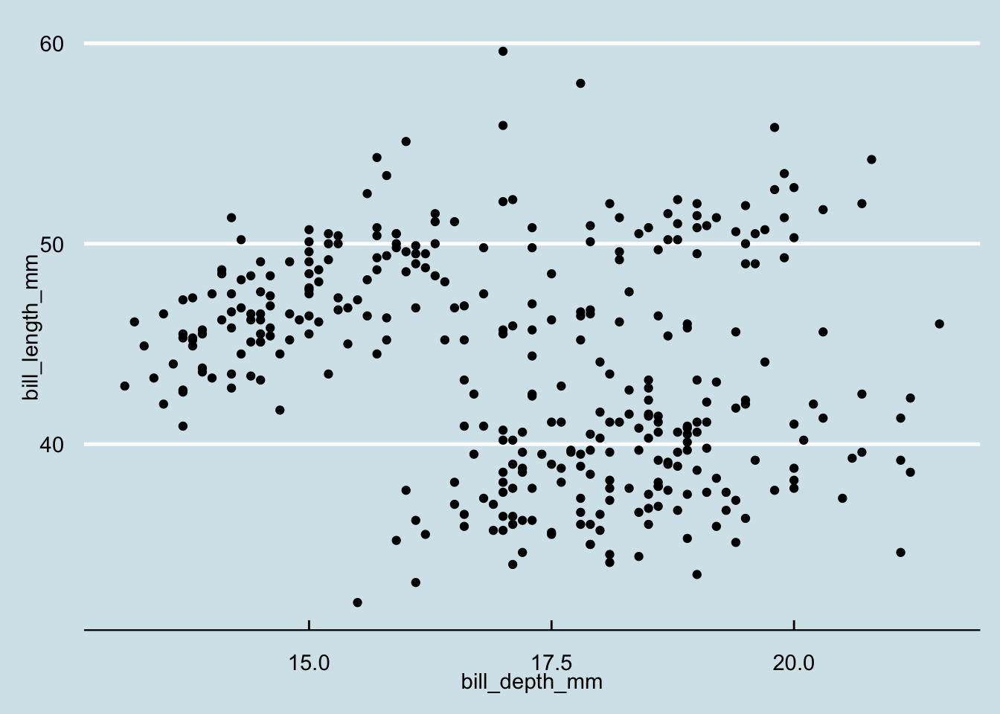
gapdata <- read_csv("./demo_data/gapminder.csv")## Rows: 1704 Columns: 6
## ── Column specification ────────────────────────────────────────────────────────
## Delimiter: ","
## chr (2): country, continent
## dbl (4): year, lifeExp, pop, gdpPercap
##
## ℹ Use `spec()` to retrieve the full column specification for this data.
## ℹ Specify the column types or set `show_col_types = FALSE` to quiet this message.
gapdata %>%
ggplot(aes(x = gdpPercap, y = lifeExp, color = continent)) +
geom_point() +
geom_smooth(lwd = 3, se = FALSE, method = "lm") +
theme_grey() # the default## `geom_smooth()` using formula = 'y ~ x'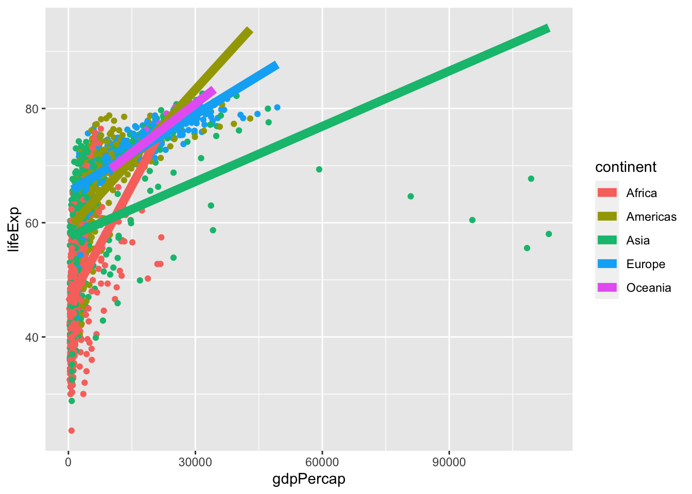
gapdata %>%
ggplot(aes(x = gdpPercap, y = lifeExp, color = continent)) +
geom_point() +
geom_smooth(lwd = 3, se = FALSE, method = "lm") +
theme_bw()## `geom_smooth()` using formula = 'y ~ x'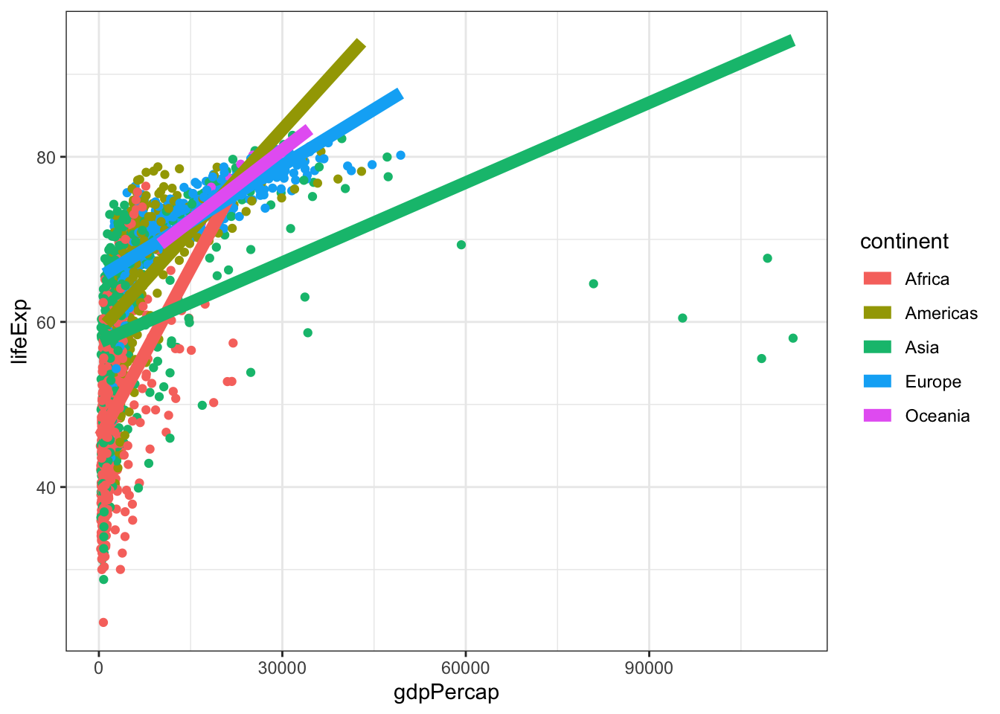
gapdata %>%
ggplot(aes(x = gdpPercap, y = lifeExp, color = continent)) +
geom_point() +
geom_smooth(lwd = 3, se = FALSE, method = "lm") +
ggthemes::theme_calc() +
ggtitle("ggthemes::theme_calc()")## `geom_smooth()` using formula = 'y ~ x'
gapdata %>%
ggplot(aes(x = gdpPercap, y = lifeExp, color = continent)) +
geom_point() +
geom_smooth(lwd = 3, se = FALSE, method = "lm") +
ggthemes::theme_economist() +
ggtitle("ggthemes::theme_economist()")## `geom_smooth()` using formula = 'y ~ x'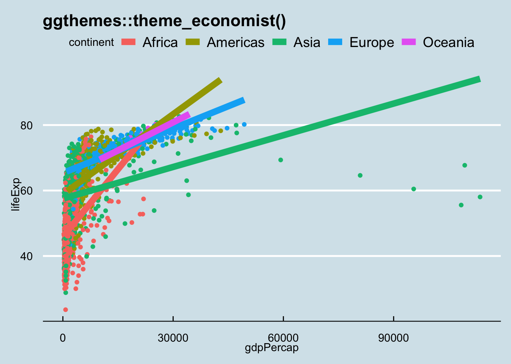
gapdata %>%
ggplot(aes(x = gdpPercap, y = lifeExp, color = continent)) +
geom_point() +
geom_smooth(lwd = 3, se = FALSE, method = "lm") +
ggthemes::theme_economist_white() +
ggtitle("ggthemes::theme_economist_white()")## `geom_smooth()` using formula = 'y ~ x'
gapdata %>%
ggplot(aes(x = gdpPercap, y = lifeExp, color = continent)) +
geom_point() +
geom_smooth(lwd = 3, se = FALSE, method = "lm") +
ggthemes::theme_few() +
ggtitle("ggthemes::theme_few()")## `geom_smooth()` using formula = 'y ~ x'
gapdata %>%
ggplot(aes(x = gdpPercap, y = lifeExp, color = continent)) +
geom_point() +
geom_smooth(lwd = 3, se = FALSE, method = "lm") +
ggthemes::theme_gdocs() +
ggtitle("ggthemes::theme_gdocs()")## `geom_smooth()` using formula = 'y ~ x'
gapdata %>%
ggplot(aes(x = gdpPercap, y = lifeExp, color = continent)) +
geom_point() +
geom_smooth(lwd = 3, se = FALSE, method = "lm") +
ggthemes::theme_tufte() +
ggtitle("ggthemes::theme_tufte()")## `geom_smooth()` using formula = 'y ~ x'
gapdata %>%
ggplot(aes(x = gdpPercap, y = lifeExp, color = continent)) +
geom_point() +
geom_smooth(lwd = 3, se = FALSE, method = "lm") +
ggthemes::theme_wsj() +
ggtitle("ggthemes::theme_wsj()")## `geom_smooth()` using formula = 'y ~ x'
21.9 提问
ggplot2中 plot 与 panel 有区别？
假定数据是这样
library(tidyverse)
set.seed(12)
d1 <- data.frame(x = rnorm(50, 10, 2), type = "Island #1")
d2 <- data.frame(x = rnorm(50, 18, 1.2), type = "Island #2")
dd <- bind_rows(d1, d2) %>%
set_names(c("Height", "Location"))
head(dd)## Height Location
## 1 7.038865 Island #1
## 2 13.154339 Island #1
## 3 8.086511 Island #1
## 4 8.159990 Island #1
## 5 6.004716 Island #1
## 6 9.455408 Island #1你画图后，交给老板看
dd %>%
ggplot(aes(x = Height, fill = Location)) +
geom_histogram(binwidth = 1, color = "white") +
scale_fill_manual(values = c("green3", "turquoise3"))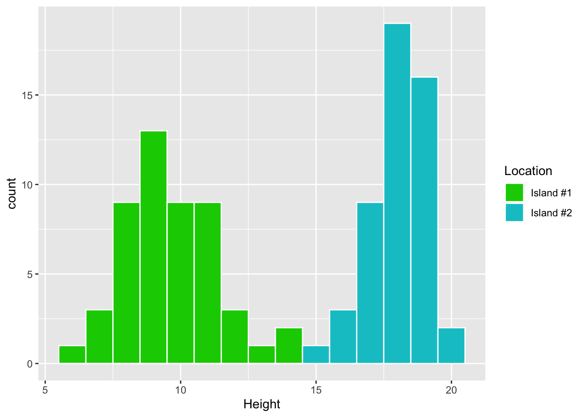
然而，老板有点不满意，希望你要这样改

请用前后两章学到的内容让老板满意吧